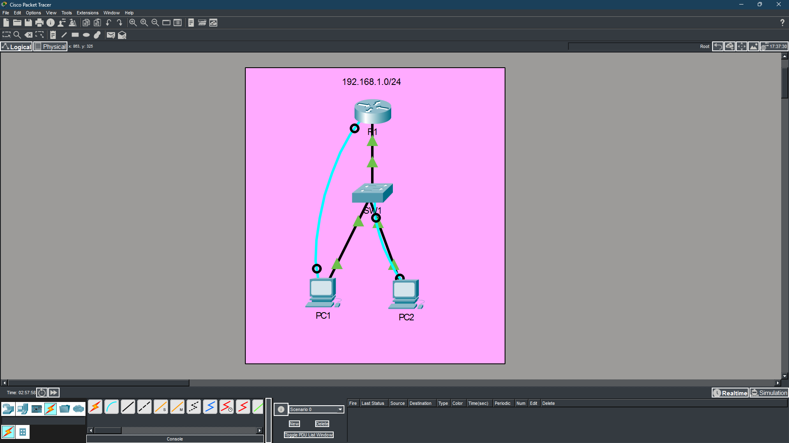
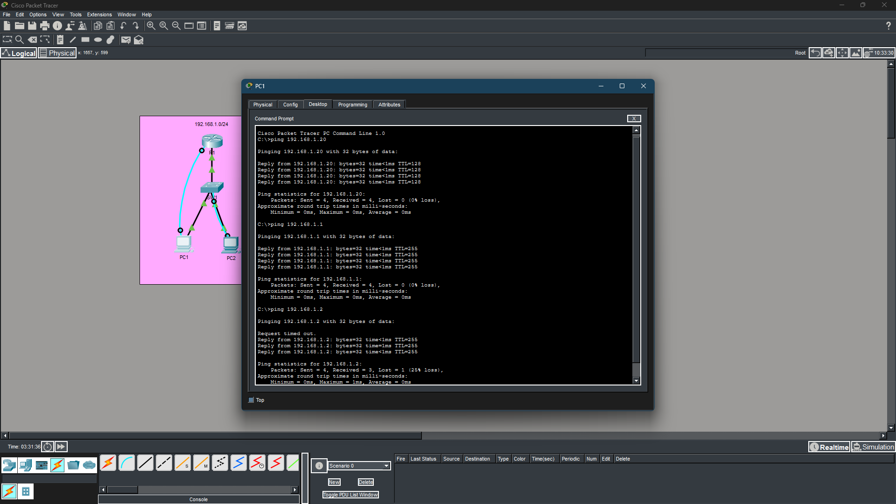
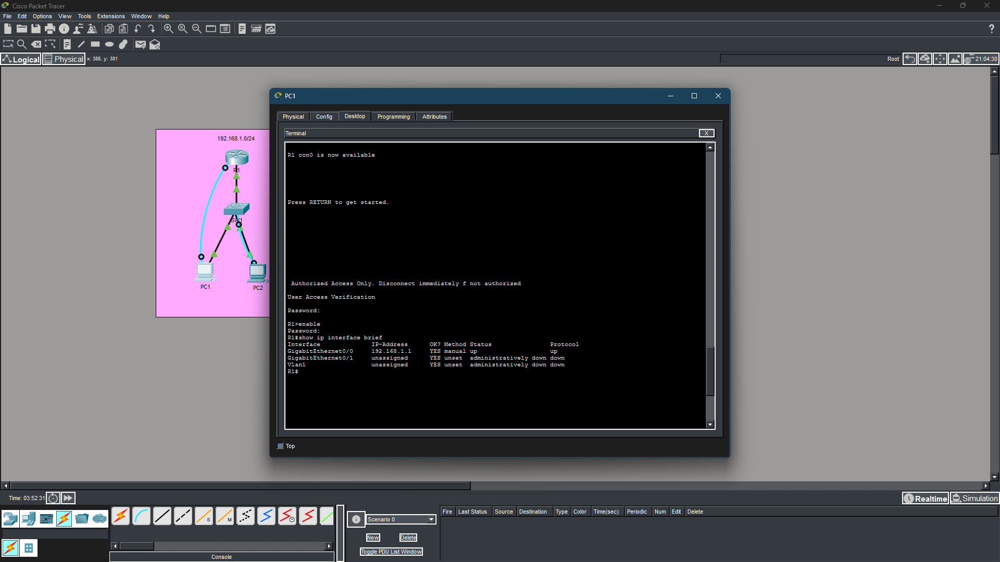

cat objectives.txt
cat tools.txt
| TOOL / TECHNOLOGY | PURPOSE |
|---|
cat skills.txt
cat topology.txt
Network: 192.168.1.0/24
[PC1: 192.168.1.10] --+
+--> [SW1: VLAN1 192.168.1.2] --> [R1 Fa0/0: 192.168.1.1]
[PC2: 192.168.1.20] --+
| DEVICE | INTERFACE | IP ADDRESS | SUBNET MASK | DEFAULT GATEWAY |
|---|---|---|---|---|
| PC1 | NIC | 192.168.1.10 | 255.255.255.0 | 192.168.1.1 |
| PC2 | NIC | 192.168.1.20 | 255.255.255.0 | 192.168.1.1 |
| R1 | G0/0 | 192.168.1.1 | 255.255.255.0 | -- |
| SW1 | VLAN 1 | 192.168.1.2 | 255.255.255.0 | 192.168.1.1 |
cat methodology.txt
cat results.txt
ls ./evidence/

// Fig 1 -- Full network topology in Cisco Packet Tracer
// Fig 4 -- Successful ping from PC1 to all devices
// Fig 5 -- show ip interface brief confirming all interfaces are upcat lessons_learned.txt